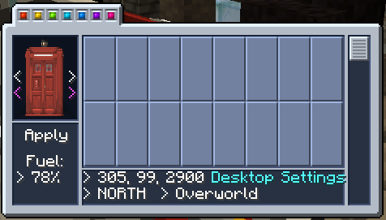
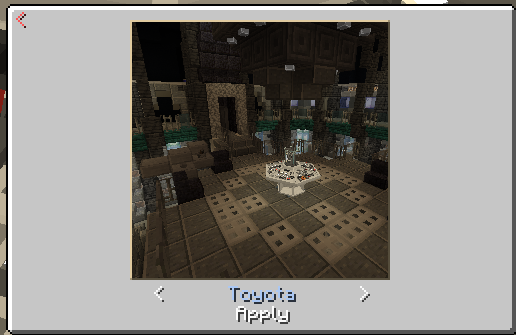
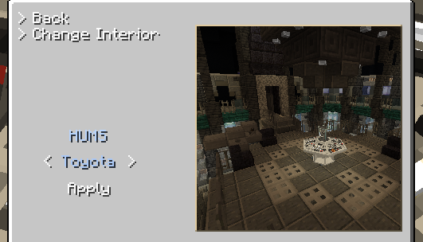
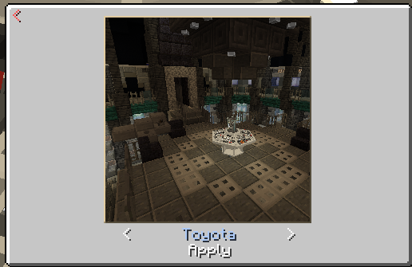
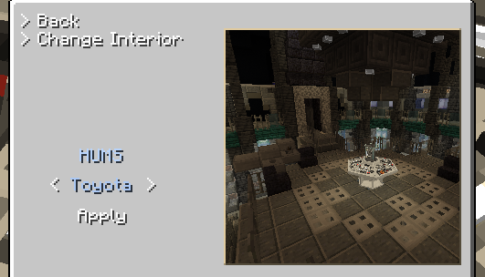

Changing the exterior
Open the monitor by using the control
The white arrows either side of the exterior shown will change the type of exterior
The purple arrows either side will change the exterior's variant
To save your changes, hit apply
Changing the interior
Open the monitor by using the control
Navigate to the interior change screen by pressing "Desktop Settings" -> "Change Interior"
The white arrows either side will change the selected interior
To start interior reconfiguration, hit apply
This process will take up 5000 AU
You will need to exit the interior and wait for it to finish
Changing the hum
Open the monitor by using the control
Navigate to the desktop settings screen by pressing the button
The white arrows either side will change the selected hum
Hit apply to save your changes




